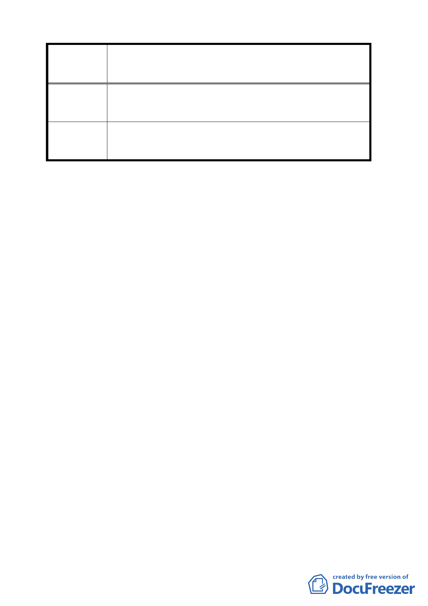

案名
劃定「臺北市文山區木柵段三小段 124 地號等 48 筆土地
為更新單元」都市更新計畫案
等 19 筆土地，業已申請建照並進行規劃中，應不予列入
都市更新劃定範圍。
委員會議決 本案依修正後更新單元劃定範圍通過（為木柵段三小段
議 124 等 37 筆土地，面積 4615 平方公尺）。
討論事項五
案名：劃定「臺北市萬華區福星段三小段 457 地號等 20 筆土地為更新單
元」都市更新計畫案
案情概要說明：
一、本案更新單元位於成都路以北本案、成都路 27 巷以東、成都路 27
巷 9 弄以南所圍街廓內，鄰近西門市場及紅樓劇場，面積為 1300 平
方公尺。
二、本更新單元範圍土地使用分區為第四種商業區，土地及建物均為私
有。
三、本更新單元西側及北側面臨之計畫道路路寬均僅 4 公尺，案內規劃
退縮 4 公尺留設必要之防救災空間。
四、本案係市府 97 年 1 月 30 日以府都新字第 09631269500 號函送到會。
五、申請單位：蘇明仁、林恆隆、聯翔興業股份有限公司。
六、辦理單位：臺北市政府。
七、法令依據：都市計畫法第 66 條；都市更新條例第 5 條、第 6 條、第
8 條、第 11 條；都市更新條例施行細則第 5 條。
八、本更新單元業經市府審查符合更新單元劃定基準
決議：本案基地未來臨成都路及轉角處，究應以留設騎樓或退縮 4 公尺
8